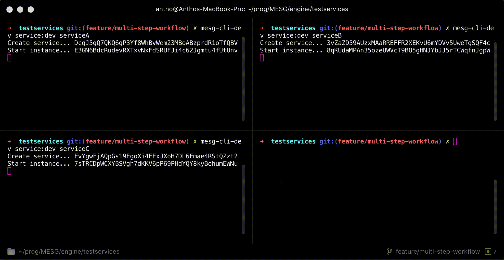

Improved dynamically-typed data on the gRPC APIs!
The dynamically-typed data system used for event data and task inputs and outputs has been significantly improved.
Before, it was using a JSON encoded string that wasn’t efficient or able to be typed. Now, it uses Google’s Protobuf Struct and a modified JSON encoder that specifies types.
Proto
Here is the diff of the Event’s proto file:
// Event represents a single event ran in Engine.
message Event {
// Hash is a unique hash to identify an event.
string hash = 1;
// instanceHash is the hash of an instance that can precede an execution.
string instanceHash = 2;
// key is the key of the event.
string key = 3;
// data is the data for the event.
- string data = 4;
+ google.protobuf.Struct data = 4;
}
mesg-js
The mesg-js library has been updated to be compatible with these modifications.
Service
The service-side API remains the same. The modifications are internal but some TypeScripts have been renamed and/or modified.
Application
The application side now exposes new encode and decode helper functions (respectively encodeData and decodeData) to replace the JSON.stringify and JSON.parse functions.
Decode
mesg.listenEvent({
filter: {
instanceHash: 'EVENT_INSTANCE_HASH',
key: 'EVENT_KEY' // optional
}
})
.on('data', (event) => {
- const data = JSON.parse(event.data)
+ const data = mesg.decodeData(event.data)x
console.log('an event received:', event.key, data)
})
Encode
const execution = await mesg.executeTask({
instanceHash: 'TASK_INSTANCE_HASH',
taskKey: 'TASK_KEY',
- inputs: JSON.stringify({ key: 'INPUT_DATA' }),
+ inputs: mesg.encodeData({ key: 'INPUT_DATA' }),
tags: ['ASSOCIATE_TAG'] // optional
})
CLI
The CLI was also updated to be compatible with this breaking change. Various fixes and improvements have also been done, like the limitation of the source code’s service size to 10MB. Make sure to add to the .mesgignore file to the dependencies (like a .dockerignore) 
Experimental feature: Workflow engine
This release contains the first experimental version of the workflow engine 
The workflow engine can automatically execute any services’ tasks when it matches with any other services’ events or tasks. Check the following video:

View the complete changelogs:
To update the Engine and the CLI, follow the installation process on the documentation